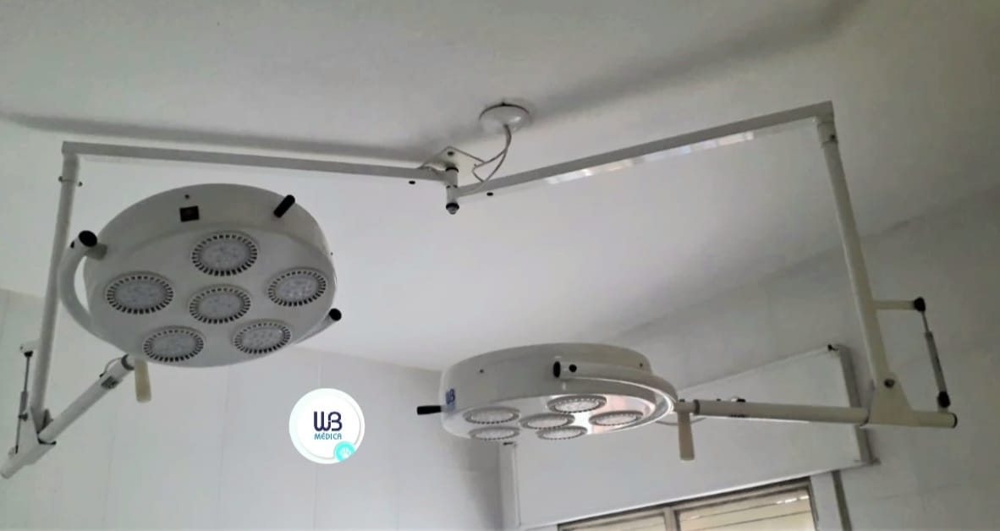
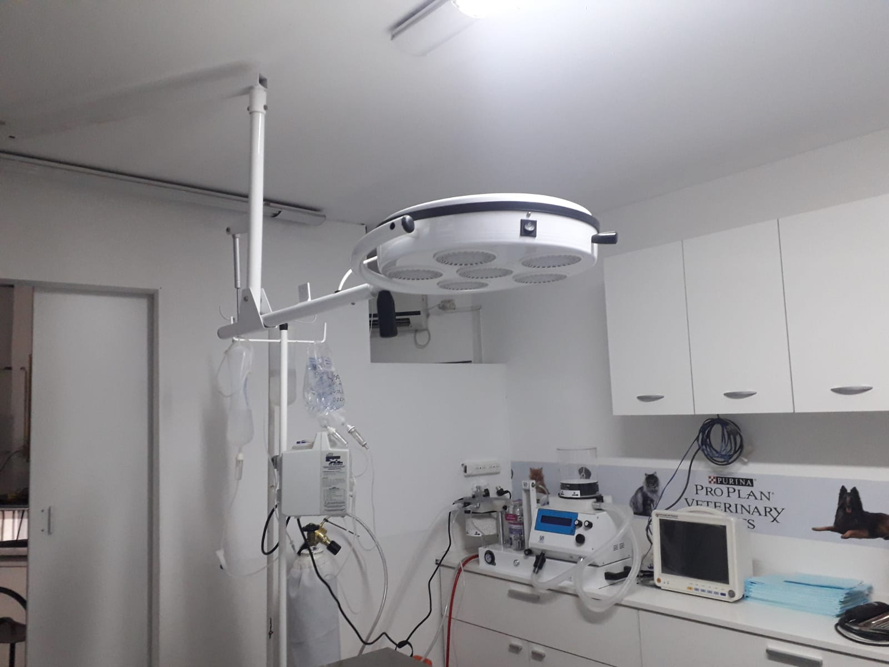

Lámpara cialitica doble de techo
La lampara tiene DOS posibilidades de instalación: Pared o Techo, con un soporte diferenciado para cada una.
Nuestras lámparas cialíticas tienen el objetivo de dotar a los espacios de trabajo veterinario de la mejor iluminación, con la intensidad necesaria y la posibilidad de manipularlas para trabajar con la mayor comodidad.

Aquí mostramos algunas de las características de nuestras lámparas cialíticas :
- -Alimentación:220Vca
- -Consumo total: 032ª
- -Diámetro de la pantalla 400mm
- -Diámetro del campo luminoso 400mm con cono de 30º
- -Intensidad lumínica 5400 lumens
- -Intensidad lumínica a 1mt 7000 lux
- -Rotación horizontal y vertical 180º
- -Altura máxima 1,90mts y altura mínima 1,55mts
- -Rotación horizontal y vertical 180º
